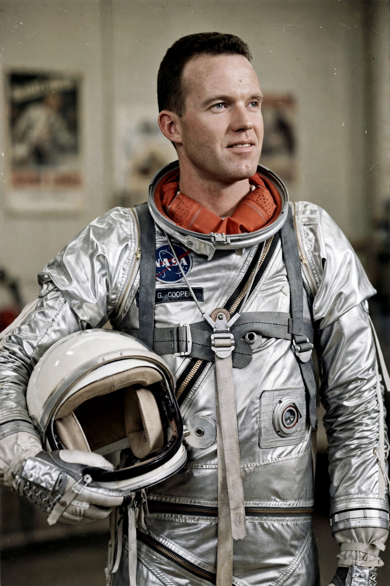

Gordon Cooper
From Wikipedia, the free encyclopedia
| Gordon Cooper | |
|---|---|
| Born | 6 March 1927, Shawnee, Oklahoma |
| Died | 4 October 2004 (aged 77) |
| Occupation | Astronaut, test pilot |
| Missions | Mercury-Atlas 9, Gemini 5 |

Cooper during the Mercury programme.Leroy Gordon Cooper Jr. (1927–2004) was an American aerospace engineer, test pilot and one of the Mercury Seven — the original seven NASA astronauts. He piloted the final and longest Project Mercury mission, Mercury-Atlas 9 (Faith 7) in May 1963, logging 34 hours in orbit — longer than all five previous Mercury flights combined — and became the last American to fly alone in orbit.
Cooper later commanded Gemini 5 (1965) with Pete Conrad, an eight-day mission that proved rendezvous and long-duration techniques for Apollo. He was known as one of the finest natural pilots of the astronaut corps; Alan Shepard and others rated his flying ability exceptionally highly.
Faith 7
On Mercury-Atlas 9, Cooper's capsule suffered progressive electrical failures, including the automatic control system and carbon-dioxide build-up. He flew the final reentry manually, drawing his own attitude reference lines on the window and timing thruster firings by his wristwatch — and splashed down within a few kilometres of the recovery ship, the most accurate Mercury landing. He also became the first American to sleep in orbit.
Later life
Cooper served as backup commander for Gemini 12 and Apollo 10 but was passed over for a lunar mission and left NASA in 1970. In later years he wrote and spoke about his belief that he had seen unidentified flying objects as a pilot — claims his fellow astronauts treated with scepticism — and worked in aerospace and boat-racing ventures.
See also
Mercury Seven · Project Mercury · John Glenn · Apollo–Soyuz Test Project